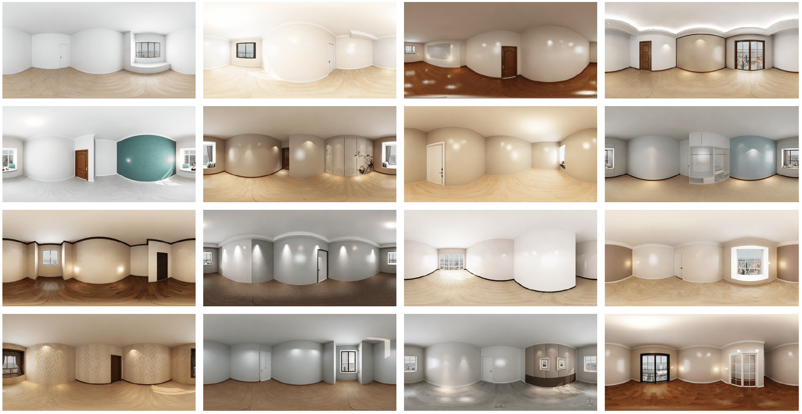

Undecorated 360° indoor scenes
@article{shum2023conditional,
title={Conditional 360-degree Image Synthesis for Immersive Indoor Scene Decoration},
author={Shum, Ka Chun and Pang, Hong-Wing and Hua, Binh-Son and Nguyen, Duc Thanh and Yeung, Sai-Kit},
journal={arXiv preprint arXiv:2307.09621},
year={2023}
}